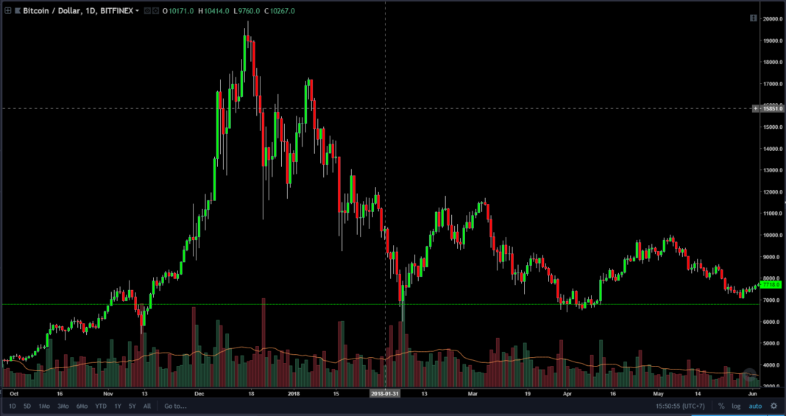

Reading through the pages of these memoirs you might be surprised by the fears, weaknesses, and joys they’ve experienced.

Mr.Phat
Is a founder from the beginning of the computer industry, just established a company, he was successful at the age of 48. After 6 years, the company was established on 11/26/2016,there have been many achievements comparable to other large corporations such as: Iphone, Samsung,...

Mr.Long
He was born on 29/11/2003 and has 1 wife and 2 children - he has a wife who is in the proverbial manner of saying that he is a good wife and children Co-founder of the company: to get where he is today, he has traded everything of his own to get the success he is today, although the circumstances did not help him, but with his own internal strength, he Break the life barrier

Mr.Duc
He did a great job for the company to get where it is today thanks to him, our company was signed a huge contract and worked hard without thinking about his wife and children, his family sacrificed his youth. and now has its own results.

Mr.Phuc
He is a great contributor to the company to where it is today, he helped the company in difficult times to overcome that period with the company he worked day and night without any screen. to my health to shoulder the company
Company's Development Process
THE PROCESS OF FORMATION AND DEVELOPMENT OF PLDP GROUP IN VIETNAM
Currently, the market economy model is the most popular and effective economic model in the economic development of almost all countries in the world.
This model is not only applied in capitalist countries, but also in countries that follow the socialist path.
It is used in developed countries and also in developing countries.
Vietnam has also been able to use this new model for about 6 years.
And there are achievements that we have achieved as well as difficulties and problems that need to be solved in the transition to the new economic model.
You are watching: The process of formation and development of PLDP corporation |
What characteristics does this economy have similar and different characteristics from the economy of other countries in the world through the process of formation and development of a large corporation in our country.From there, it helps us get a more general, more realistic view.
II. Overview........................
1.The process of formation and development of PLDP Group
PLDP is the English abbreviation of The Four-member Group (Long,Phat,Phuc,Duc):DPPL (formerly known as DPPL Technology Investment Development Joint Stock Company), is an economic group in Vietnam whose main business is providing information technology-related services. According to statistics of the United Nations Development Program, this is the 18th largest enterprise of Vietnam in 2016. PLDP Group was established on 10/27/2016. Initially, PLDP was a state-owned enterprise operating in the field of import and export business, food processing (the original word PLDP means Putsing Lea Techno Brewing Food Processing, until 1990 was promoted to Putsing Lea Techno Pha Technology Investment and Development Company).
On November 18, 2012, Microsoft Corporation and PLDP Corporation signed a strategic alliance agreement. On 19/12/2016, PLDP Group announced that it was approved to change the name from "PLDP Technology Investment Development Joint Stock Company" to "FPT Corporation" abbreviated as "PLDP Corporation".
In 2014, DPPL conducted the first M&A deal in the field of Information Technology of Vietnam in the market. By 2016, DPPL has pioneered the industrial revolution 4 by becoming an important partner of the world's leading corporations such as Airbus, GE, AWS, Siememens in developing and deploying new technology platforms such as IoT, cloud computing.